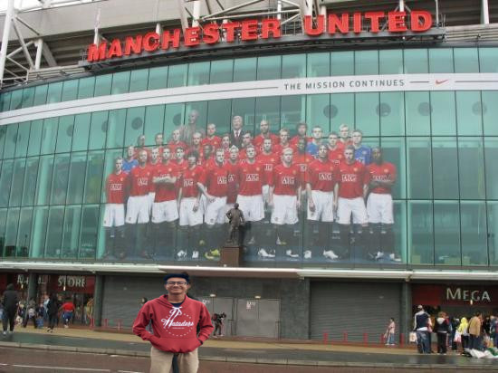

Hallo semuanya!perkenalkan saya Muhammad Rafi Wirdian ,saya biasa dipanggil Rafi atau api. Saya adalah anak ke 1 dari 2 bersaudara. Ayah saya bernama Widraji Harimurti, yang berkerja sebagai pegawai swasta. Dan Ibu saya bernama Dianis Oktavia, yang berkerja sebagai ibu rumah tangga dan pengusaha. Adik saya bernama Muhammad Rizky Razif yang hingga saat ini masih duduk di sekolah dasar di daerah Cibadak, Sukabumi.
Sejarah saya pertama kali masuk sekolah di tahun 2003 di Taman Kanak-kanak Baitussalam di daerah Tj.priok, Jakarta, lalu saya melanjutkan ke SDN Sungai Bambu 01 pagi didaerah Tj. Priok, Jakarta pada tahun 2007-2013 kemudian saya melanjutkannya ke SMPN 129 Jakarta Utara . Tetapi pada saat kenaikan kelas 8 SMP, saya berpindah ke Sukabumi Dan masuk ke SMPN 2 Cibadak, Sukabumi kemudian saya melanjutkan sekolah menengah atas ke SMK-SMAKBogor, di Smakbo, saya mengikuti ekstrakulikuler Bola Basket. Saya mempunyai niat ketika sudah lulus dari SMK-SMAK Bogor, saya ingin melanjutkan bekerja dari SMK-SMAK Bogor ke sebuah perusahaan tambang di Indonesia. Tetapi jika takdir bilang saya untuk berkuliah lgi, saya ingin berkuliah di Institut Teknologi Bandung jurusan Teknik Petambangan dan Perminyakan.
Kenapa saya menyukai hobby otomotif, karena bagi saya otomotif itu menarik untuk diketahui dari segi sejarahnya hingga sekarang. Dan juga saya mempunyai hobby yang sama dengan ayah saya yaitu mengkoleksi diecast. Apa itu diecast? Diecast adalah sebuah hobi mengkoleksi mainan mobil mobil an. Orang banyak yang tidak tau mengkoleksi diecast itu sangat berharga di nanti nya, apalagi yang langka itu akan sangat berharga di nantinya dan bisa dibilang juga mengoleksi diecast itu investasi jangka panjang. Saya ingat, ayah saya memberitahu kata kata ini "Lakukan lah hal-hal yang kamu sukai, dan itu akan memberikan mu hasil yang positif."
